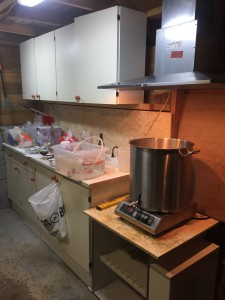
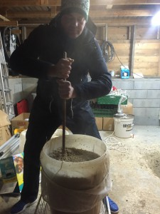
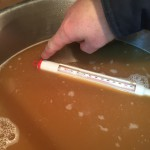
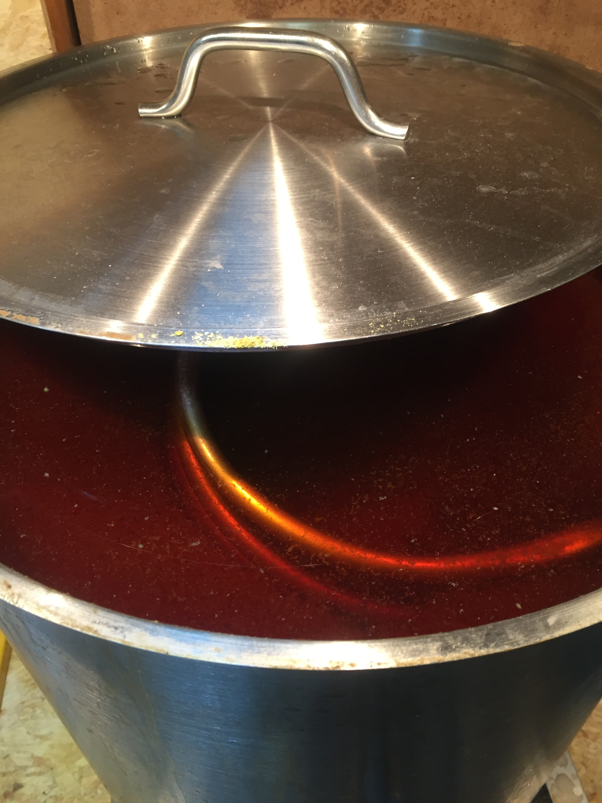
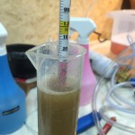

I og med at NM Brass er like rundt hjørnet skjønte vi fort at tiden ikke jobbet for oss. Et hurtigbrygg ble løsningen. Vi kjører på med en tredje versjon av Hat Trick med noen modifikasjoner. Denne oppskriften har etterhvert blitt korpskonkurranseølet og det blir med stolthet delt ut i vilden sky. Det er usikkert om det er smaken eller etikettene som fenger mest, men vi mener nå i alle fall at vi etter hvert har fått tak på denne APA-varianten. Planen er å få dette flasket når noen har tid, mest sannsynlig mandag 25. januar, for så å la det karbonere til NM-helgen den 5.-6. februar. 12 dager gjæring og 12 dager karbonering er kan hende i underkant, men må man så må man. Hyppig måling av SG for å spikre en bombesikker flaskedato må uansett til.
Dette er et standardøl, basert på brygging av Leif og Steffen (Jonas og Fredrik på korps, Gaute stakk innom en tur etter å ha vært i Flekkeby). Garasjen har blitt oppgradert med en 90 cm 



Pga pensjonert koreawatt og minusgrader i omgivelsene gikk det svært lang tid før vørteren kokte. Et tips til neste gang må være å skru kokeplaten på “10” og ikke “9” Kjelen ble etterhvert også isolert med bølgepapp. Hadde vi iverksatt de to nevnte tiltakene fra starten av ville vi nok forkortet bryggedagen med opptil en time. Men det er jo mye hygge i å brygge.
Kokingen er det ikke så mye å si om, sett det før, gjort det før. 



